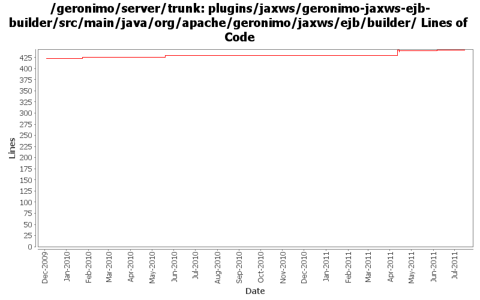

[root]/plugins/jaxws/geronimo-jaxws-ejb-builder/src/main/java/org/apache/geronimo/jaxws/ejb/builder

| Author | Changes | Lines of Code | Lines per Change |
|---|---|---|---|
| Totals | 17 (100.0%) | 50 (100.0%) | 2.9 |
| xuhaihong | 11 (64.7%) | 38 (76.0%) | 3.4 |
| gawor | 3 (17.6%) | 6 (12.0%) | 2.0 |
| djencks | 3 (17.6%) | 6 (12.0%) | 2.0 |
GERONIMO-5050 really use only one owb context for the whole ear, and combine all the module info into it
3 lines of code changed in 2 files:
GERONIMO-5990 A JAXWSApplicationContext GBean is added to hold all the available port info in the current web or ejb module
I hope that in the future, we could have a way to avoid create each factory gbean for each web service endpoint, and there will be a method like getWebServiceContainer method in this gbean
2 lines of code changed in 1 file:
GERONIMO-5902 Ignore web service from web application side if it is also an EJB web service
9 lines of code changed in 2 files:
GERONIMO-5902 Refract the codes, remove the isEJB parameter from the interface
2 lines of code changed in 2 files:
Initial enablement for ejb webservice
25 lines of code changed in 2 files:
fix build break
3 lines of code changed in 2 files:
GERONIMO-4918 port of dependency setup changes from 2.2
3 lines of code changed in 1 file:
GERONIMO-5030: Initial refactoring of some of the module deployment code to support deployment of Bundles. Also, implemented rfc66 extender that can actually deploy WABs with simple servlets and jsps.
3 lines of code changed in 1 file:
GERONIMO-4967 Enable Axis2 plugin in Geronimo 3.0
1. Rename some packages to avoid the exporting conflict
2. Use those bundlized dependency
0 lines of code changed in 4 files: